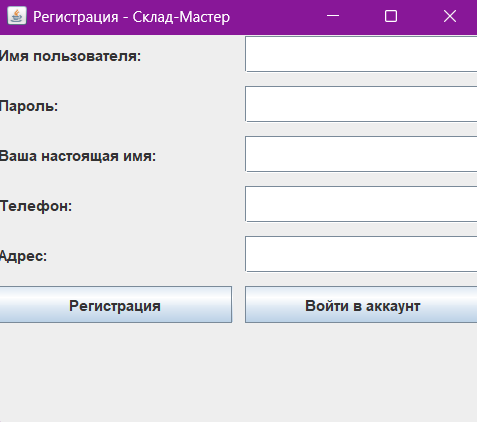

Warehouse Contro — это кроссплатформенное Java-приложение для управления складом, заказами и пользователями с поддержкой ролей (Клиент, Работник, Админ). Приложение использует общую удалённую базу данных MySQL, имеет удобный графический интерфейс.
Warehouse Contro-setup.exe).Важно: Для работы приложения на компьютере должен быть установлен Java (JRE/JDK). Если Java не установлена — скачайте с официального сайта.
При первом запуске откроется окно входа. Если у вас ещё нет аккаунта, нажмите "Регистрация" и создайте пользователя (роль по умолчанию — Клиент).
DELETE FROM Users WHERE username = 'имя_пользователя';UPDATE Users SET role = 'нужная_роль' WHERE username = 'имя_пользователя';По вопросам установки и работы обращайтесь к разработчику или администратору системы.
Для входа используйте свой логин и пароль. Для регистрации заполните все обязательные поля.
Клиент: Просматривайте товары, добавляйте в корзину, оформляйте заказы.
Работник: Обрабатывайте заказы, управляйте товарами.
Админ: Управляйте пользователями, товарами, заказами, просматривайте фото.
C:\Program Files\SkladMaster\
|-- appSklad-jar-with-dependencies.jar
|
|-- README.md
|-- run.bat
Для обновления скачайте новую версию установщика и повторите установку.